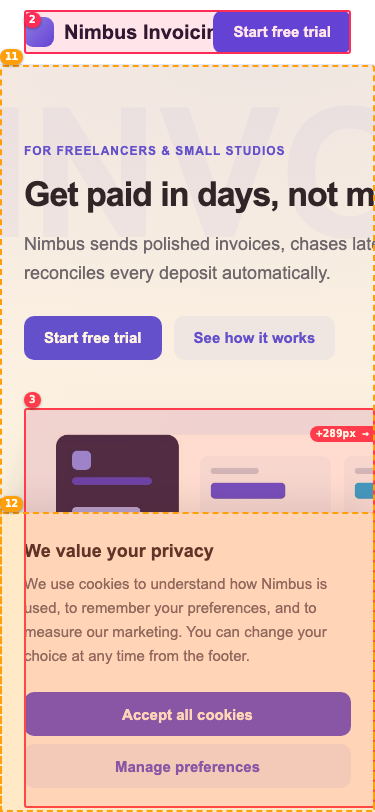
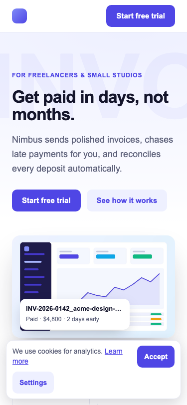
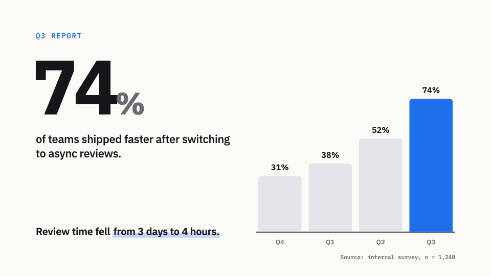
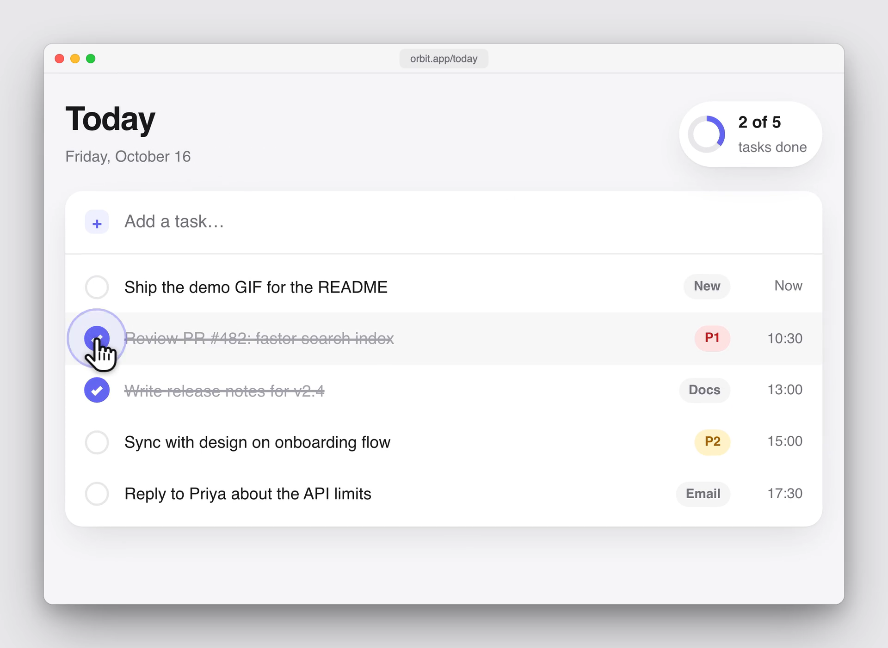
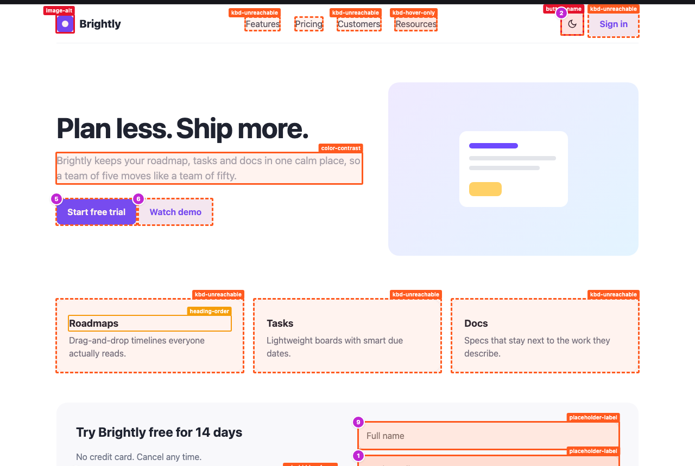
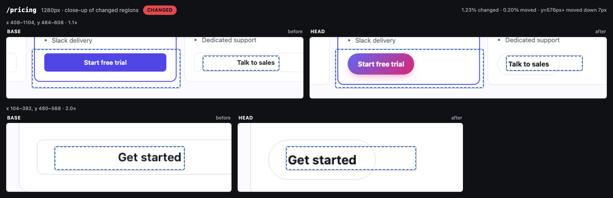

You
Check the landing page on mobile and fix what breaks.


0
errors
responsive-qa · 375px and 1280px
✖
horizontal-overflow table.compare
✖
image-overflow img.hero-shot
✖
overlap a.header-cta
✖
tap-target 4× .social a
✓ No errors · fixed in source, re-run
Six skills, each with its own evidence

Motion Video
render.mjs

Demo Recorder
record.mjs
Responsive QA
sweep.mjs

A11y Audit
audit.mjs
Drift score 13% EXACT 50 NEAR 16 OFF-SCALE 10 #1e4fd6 → brand-600 ΔE 0.41
Token Drift
scan.mjs

PR Visual Diff
capture.mjs
Knack
Agent skills that show their work.
/plugin marketplace add mayank2424/knack